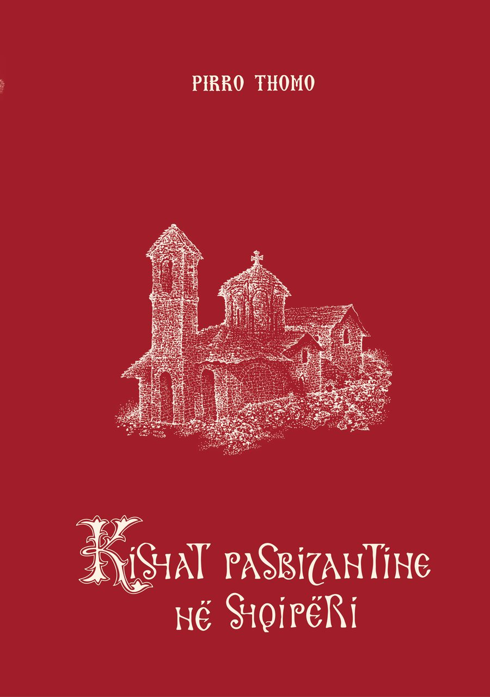

Post-Byzantine Churches in Albania
Pirro Thomo · Second revised edition · 2023
A monograph on church architecture of the 16th to 19th centuries, with a region-by-region morphological analysis and a typological one. The number of monuments studied grew from 88 in the first edition to 111 in this one. This edition was supplemented with historical data, illustrations and the full inscriptions from Th. Popa's book on the inscriptions of Albania's churches.
Colour plates — 24 pages: read · download (10 MB)
- Pages
- 444
- Year
- 2023
- Publisher
- Berg, Tiranë
- ISBN
- 978-9928-368-22-5
- Language
- Albanian, with English and French summaries